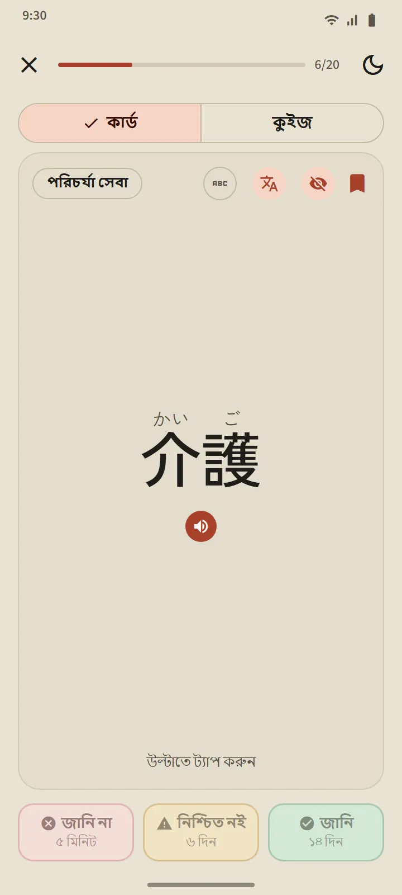
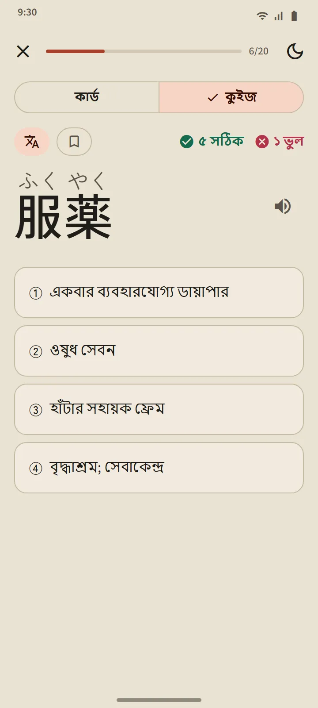
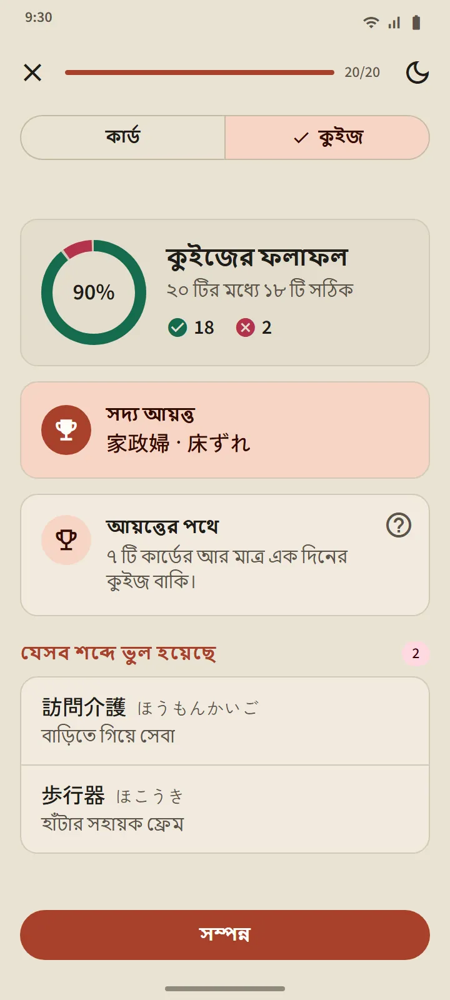
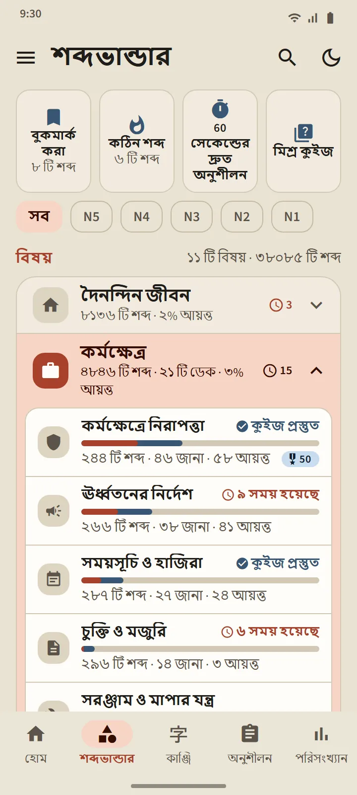
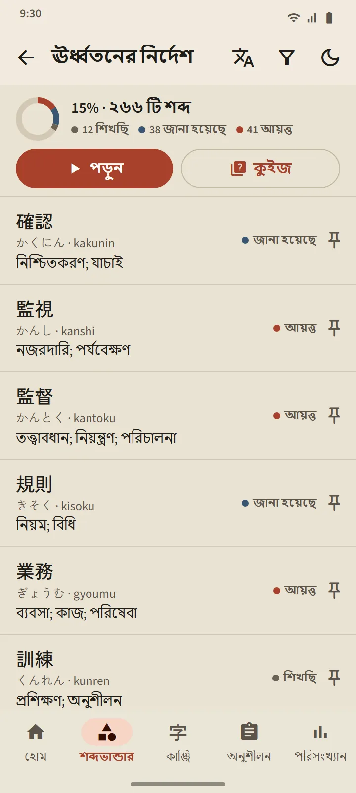
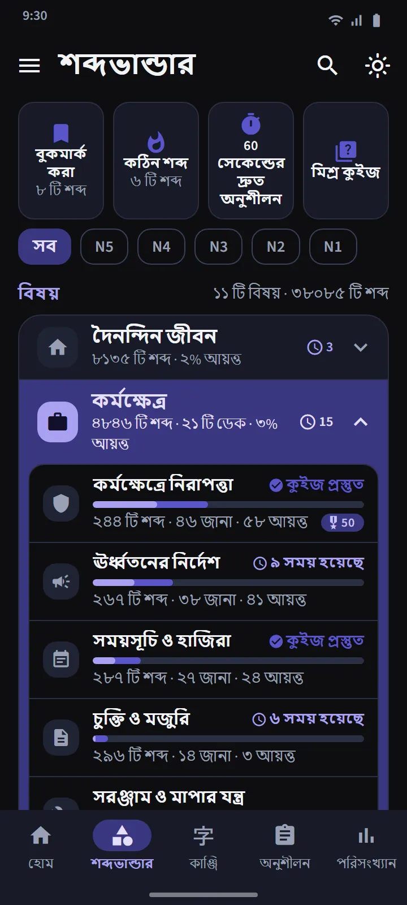
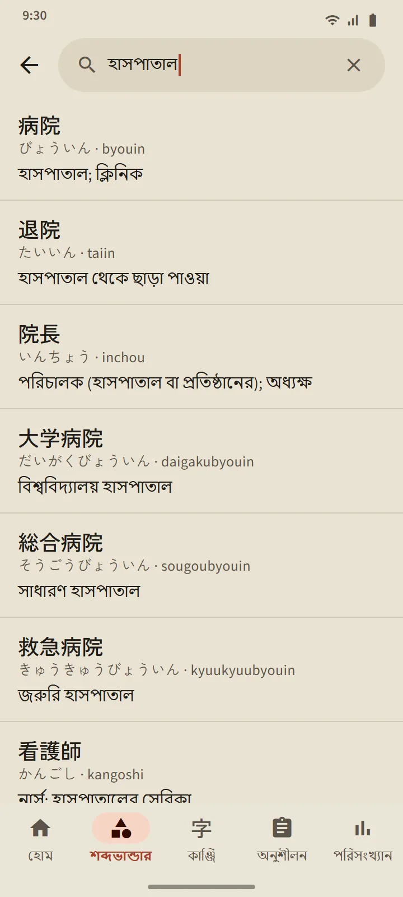

যে কার্ড জানে আপনি কখন ভুলতে চলেছেন
কার্ডের সামনের দিকে শব্দটি দেখা যায় (চাইলে ফুরিগানাসহ)। ট্যাপ করে উল্টালে পাবেন পঠন, রোমাজি, অর্থ ও উপাদান কাঞ্জি, সঙ্গে একটি উচ্চারণ বোতাম। তারপর তিনটি বোতামের একটি দিয়ে নিজেকে মূল্যায়ন করুন।
সময়সূচি ঠিক করে FSRS, আধুনিক ফ্ল্যাশকার্ড অ্যাপগুলোতে ব্যবহৃত একই স্পেসড রিপিটিশন অ্যালগরিদম। প্রতিটি বোতামে দেখানো থাকে শব্দটি কখন ফিরে আসবে: কয়েক মিনিট, দিন বা সপ্তাহ পরে। আপনি যত বেশিবার জানি বোতাম চাপবেন, বিরতি তত লম্বা হবে।
- জানি না যেকোনো ধাপ থেকে শব্দটিকে শিখছি ধাপে ফেরত পাঠায়।
- নিশ্চিত নই তার বিরতি ছোট করে।
- জানি চাপলে শব্দটি জানা হয়েছে ধাপে যায় এবং পরের রিভিউ আরও পিছিয়ে যায়।

চারটি ধাপ, আর আয়ত্ত করাটা প্রমাণ করতে হয়
প্রতিটি শব্দ চারটি ধাপ পার হয়: নতুন, শিখছি, জানা হয়েছে, আয়ত্ত। কার্ডে জানি চাপলে শব্দটি কেবল জানা হয়েছে ধাপে যায়। আয়ত্ত ধাপে পৌঁছাতে হলে তিনটি ভিন্ন দিনে কুইজে সেটির সঠিক উত্তর দিতে হবে। আয়ত্ত করা শব্দ সময় হলে আবার পরীক্ষা করা হয়, আর ভুল হলে নিচের ধাপে নেমে যায়।
একটি ডেকের কুইজ খোলে যখন তার 20টি শব্দ জানা হয়েছে বা আয়ত্ত হয়েছে (ছোট ডেকের সব শব্দ জানা হলেই খুলে যায়)। প্রশ্ন দুই দিকেই আসে: শব্দ থেকে অর্থ, আর অর্থ থেকে শব্দ। শেষে দেখা যায় নতুন আয়ত্ত হওয়া শব্দ, আয়ত্তের এক ধাপ দূরের শব্দ এবং যেগুলো ভুল হয়েছে।


বিষয় ধরে পড়ুন, প্রতিটি শব্দের অগ্রগতি দেখুন
শব্দভান্ডার ট্যাব 11টি গ্রুপে ভাগ করা, আর প্রতিটি গ্রুপে আছে ছোট ছোট ডেক। ওপরের ফিল্টার সবকিছু একটি JLPT স্তরে সীমাবদ্ধ করে। প্রতিটি ডেকের নিজস্ব স্ক্রিন আছে: সম্পন্নের শতাংশের রিং, প্রতিটি শব্দের অবস্থাসহ শব্দ তালিকা, শিখছি/জানা হয়েছে/আয়ত্ত ফিল্টার এবং পড়ুন ও কুইজ বোতাম।
কর্মক্ষেত্র গ্রুপে জাপানে কাজ করতে যেতে ইচ্ছুকদের জন্য 21টি ডেক আছে: কর্মক্ষেত্রে নিরাপত্তা, ঊর্ধ্বতনের নির্দেশ, সময়সূচি ও হাজিরা, চুক্তি ও মজুরি, সরঞ্জাম ও মাপার যন্ত্র, লজিস্টিকস ও গুদাম, অফিস ও নথিপত্র, খাদ্য প্রক্রিয়াজাতকরণ, পরিচর্যা সেবা, কারখানা ও উৎপাদন, শিল্প যন্ত্রপাতি, ইলেকট্রনিক্স ও বিদ্যুৎ, নির্মাণ, রেস্তোরাঁ ও রান্নাঘর, কৃষি, জাহাজ নির্মাণ, ভবন পরিচ্ছন্নতা, মৎস্য শিল্প, গাড়ি ও মেরামত, বিমান চলাচল ও বিমানবন্দর, হোটেল ও আতিথেয়তা। জাপানে জীবনযাপনের জন্য আছে যাতায়াত, কেনাকাটা ও টাকাপয়সা, বাড়ি ও আসবাবের ডেক, সঙ্গে সমাজ ও প্রশাসন ও শরীর ও স্বাস্থ্য গ্রুপ।
| গ্রুপ | ডেক |
|---|---|
| দৈনন্দিন জীবন | 16 |
| কর্মক্ষেত্র | 21 |
| সমাজ ও প্রশাসন | 8 |
| শরীর ও স্বাস্থ্য | 8 |
| স্বভাব ও আবেগ | 8 |
| পদের শ্রেণি | 5 |
| প্রযুক্তি ও মিডিয়া | 4 |
| প্রকৃতি ও বিজ্ঞান | 10 |
| একাডেমিক বিষয় ও মতামত | 8 |
| সংস্কৃতি ও ধর্ম | 4 |
| খেলাধুলা ও গেম | 3 |


বিশেষ ডেক ও দ্রুত অনুশীলন
গ্রুপের তালিকার ওপরে আছে তিনটি ডেক, যেগুলো সব ডেক থেকে শব্দ নেয়: বুকমার্ক করা (আপনার তারকা চিহ্ন দেওয়া শব্দ), কঠিন শব্দ (কার্ডে বারবার ভুলে যাওয়া বা কুইজে ভুল করা শব্দে নিজে থেকেই ভরে ওঠে) এবং 60 সেকেন্ডের দ্রুত অনুশীলন (এক মিনিটে যতগুলো কার্ড ধরে)। চতুর্থ টাইল মিশ্র কুইজ একসঙ্গে সব ডেকের জানা হয়েছে ও আয়ত্ত করা শব্দ পরীক্ষা করে।

38,085 শব্দের একটি পকেট অভিধান
হেডারের সার্চ আইকন দিয়ে যেকোনো শব্দ খোঁজা যায় কাঞ্জি, কানা, রোমাজি বা অর্থ দিয়ে। ফলাফল মেলার মাত্রা অনুযায়ী সাজানো হয়, আর রোমাজি মেলানো হয় বানানের ছাড় রেখে: shinbun ও shimbun, koohii ও kōhī, arigato ও arigatou সবই একই শব্দ খুঁজে দেয়। প্রতিটি শব্দের একটি বিবরণ পাতা আছে: তার ধাপ ও পরের রিভিউ, অর্থ, পঠনসহ উপাদান কাঞ্জি এবং একটি উচ্চারণ বোতাম।


স্তর ও অর্থের ভাষা
শব্দের স্তর একটি অনুমান: Japan Foundation শব্দভান্ডারের কোনো অফিসিয়াল তালিকা প্রকাশ করে না, তাই স্তর নির্ধারণ করা হয়েছে পুরোনো JLPT তালিকা ও ব্যবহারের হার থেকে। আলাদা কোনো “JFT” শব্দ-স্তর নেই: JFT-Basic-এ N5 ও N4-এর মতোই মৌলিক শব্দভান্ডার এবং তার সঙ্গে কর্মক্ষেত্রের শব্দ পরীক্ষা করা হয়।
কোরীয় ও প্রথাগত চীনাসহ 15টি ভাষায় অর্থ সম্পূর্ণ। অনুবাদের ভাষা সেটিংসে ইন্টারফেসের ভাষা থেকে আলাদাভাবে বেছে নেওয়া যায়।
| স্তর | শব্দ | বিনামূল্যে |
|---|---|---|
| N5 | ১,০৩০ | ১,০০৭ |
| N4 | ২,০৪৪ | ১,৫০৩ |
| N3 | ১১,২৩০ | ৪,০৯৭ |
| N2 | ১১,৩০৯ | ২,২৯০ |
| N1 | ১২,৪৭২ | ৫০৩ |